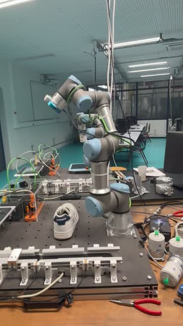
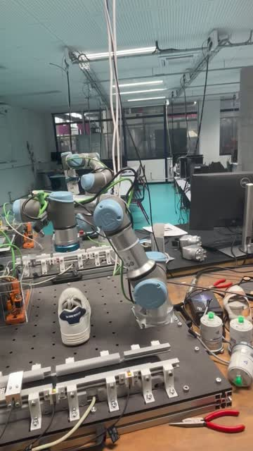

ProjectREAL HARDWARE
3D perception and bin-picking with a UR3e arm
A ROS 2 pipeline from camera pixels to a collision-free pick-and-place on a real UR3e: the robot finds a shoe, locates the hole to grip, computes a grasp pose and plans the motion.
- Context
- Annual project · European project REMAIN
- Dates
- 2025 – 2026 (two semesters)
- Team
- 6 students
- Hardware
- UR3e · RealSense D435 (eye-in-hand)
01Architecture
Three layers that only talk through ROS 2 topics and the TF2 tree, so each one could be tested alone (perception replayed from a rosbag, motion fed by a fake publisher):
base_link02Vision: instance segmentation
- Bounding boxes include background and are too coarse for millimetre gripping, so we chose instance segmentation with YOLOv11s-seg, two classes:
shoeandhole. - About 1,200 images captured in the robot's own workspace and labelled by hand with polygon masks (makesense.ai, then Roboflow).
03Hand-eye calibration
The camera is on the wrist, so its pixels must be expressed in the robot's frame. With an ArUco marker and
easy_handeye2, about 20 samples gave the transform from tool0 to the camera:
a 7.0 / −3.8 / 3.1 cm offset and a ~88° rotation about Z, which matches the side bracket on the real robot.
04Grasp from the mask
- PCA on the hole mask gives its centroid and principal axes. The fingers close along the minor axis: shortest travel and the most stable grip.
- Fingertip points found by walking along the minor axis until the mask edge.
- Depth = median of a small window, with fallbacks, since one depth pixel is too noisy.
- Pinhole back-projection, then TF2 to
base_link; published as/shoe_detector/grasp_point_base.
05Safe motion with MoveIt 2
- Table modelled as a collision box; the 3D-printed camera bracket attached to the wrist as a collision object.
- A virtual box keeps the sampling planner (RRT-Connect) from swinging the elbow behind the robot.
- Grasp point = median of 5 detections, checked against workspace bounds, then latched so the arm never chases a flickering target.
- Fixed poses (home, place) recorded in joint space for repeatability; the pick pose is Cartesian, with straight-line descent and retreat.
- Every motion cancels pending goals, reseeds from
/joint_statesand retries up to 3 times; speed kept at 3% for safety.


06Honest status
Vision, frame transforms, filtering, planning, execution and recovery all run end to end on the real UR3e. The gripper (OnRobot 2FG7) was never triggered from our pipeline: the bridge between our script and the digital output used by the gripper program did not work in time, so the arm performs the full sequence without closing the fingers. We chose to keep that step as a placeholder rather than ship an unstable call that could stop the arm halfway through a motion.